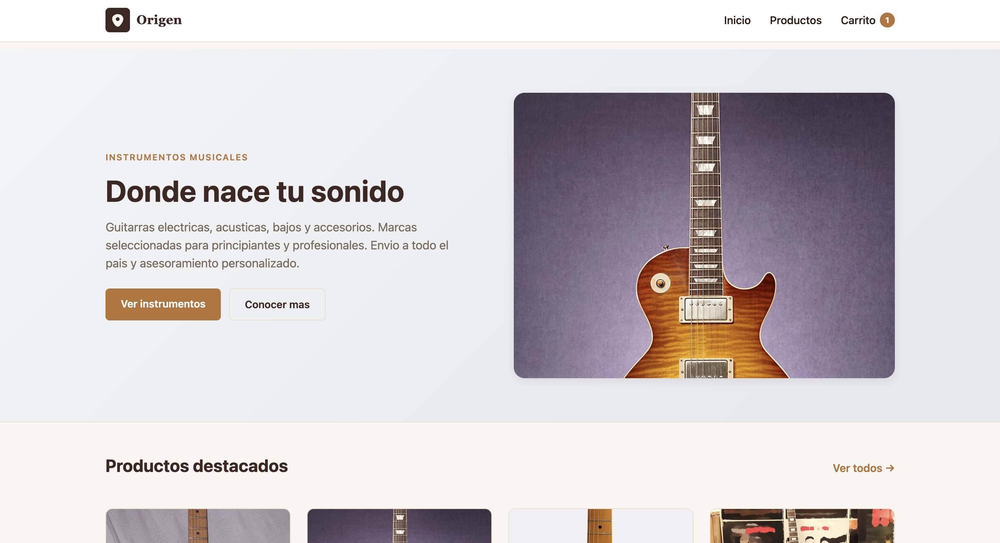
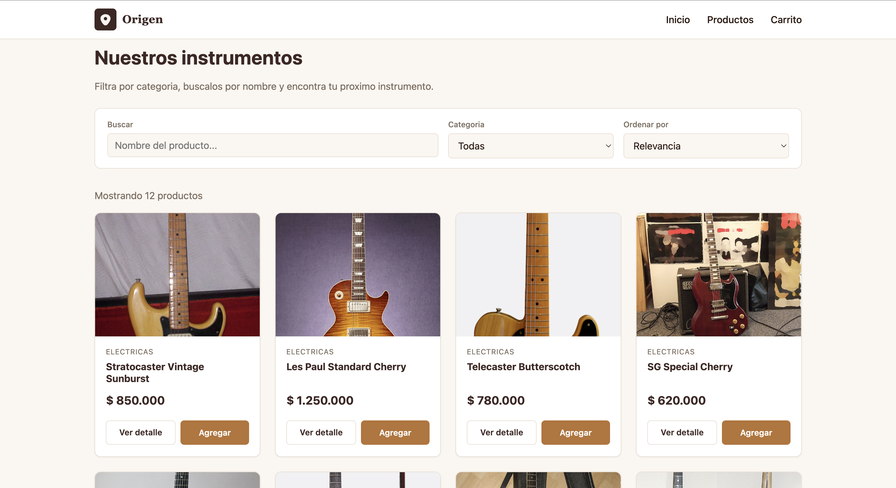
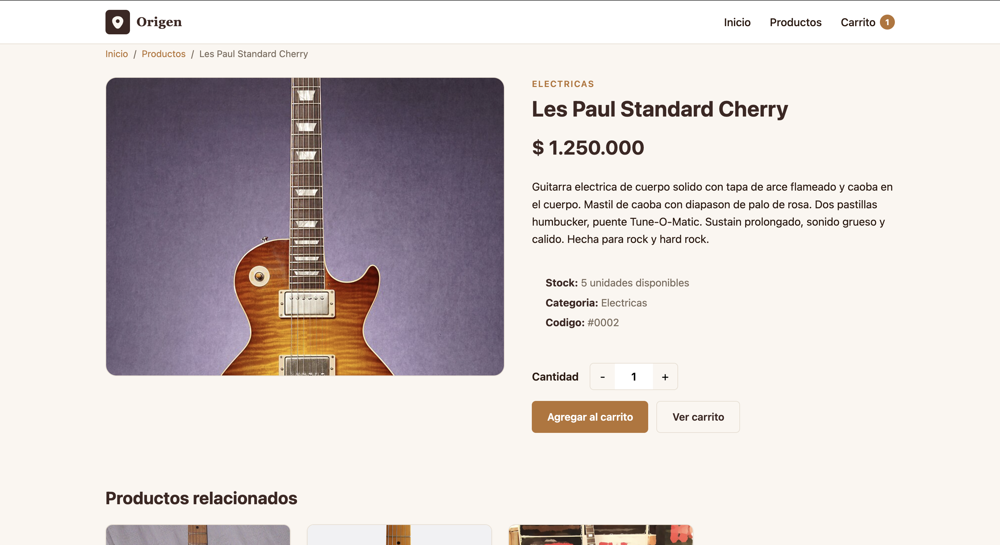
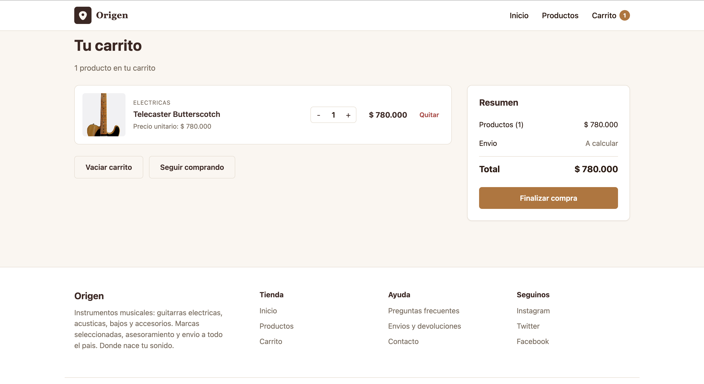

"Donde nace tu sonido."
Tienda online de instrumentos musicales: guitarras eléctricas, acústicas,
bajos y accesorios. Catálogo con 12 productos en 4 categorías, carrito
persistente, checkout validado — todo en el cliente, deployable en Vercel.
localStorage
Datos
12 instrumentos en src/data/products.js · 4 categorías backend pendiente
CI / Hosting
GitHub + Vercel · deploy automático
↓ Usá → / ← o la barra inferior para navegar

screenshots/home.png
screenshots/catalogo.png
screenshots/detalle.pnggenerateStaticParams) + productos relacionados

screenshots/carrito.pnglocalStorage · checkout validado
Demo en vivo: npm run dev en local · o la URL de Vercel.
6 elementos:
① usuario+navegador · ② HTML/CSS/JS diferenciados · ③ componentes y rutas reales · ④ flechas de flujo · ⑤ setState → re-render · ⑥ pipeline deploy
Cada concepto, anclado a un archivo concreto del repo.
<header> + <nav> en Navbar.js<main> en app/layout.js:15<article> por producto en ProductCard.js:18<section> separa hero / destacados / categorías / beneficios<footer> con h3/h4/ul jerárquicosaria-label="Abrir menu" + aria-expanded en hamburguesa<nav aria-label="Breadcrumb"> en detallearia-label dinámico en cada botón "Agregar"<label htmlFor> asociado a cada input del checkout1fr 340px → 1fr bajo 900px:root centralizan paletaonClick agregar al carrito · ProductCard.js:11onClick +/− cantidad · CartItem.js:30onSubmit + preventDefault · checkout/page.js:42onChange en buscador y selects de filtros
Módulos ES6: export / import con alias @/* en jsconfig.json · una responsabilidad por archivo
(lib/format.js formatea precios, context/ maneja estado, components/ presenta UI).
Función JS que devuelve JSX. Cada parte de la UI es un componente:
ProductCard, Navbar, CartItem, ProductGrid.
Son reutilizables e independientes entre sí — el mismo ProductCard aparece
en home, catálogo y productos relacionados.
Datos que el componente padre pasa al hijo. Ejemplo:
<ProductCard product={item}/>. Son de solo lectura dentro
del componente que las recibe — el hijo no puede modificarlas, solo usarlas para renderizar.
Datos que cambian y disparan re-render. En MusicTrack lo uso para:
la cantidad en AddToCartButton, los items del carrito en
CartContext, el open del menú móvil en el Navbar,
y los errors del formulario de checkout.
Se ejecuta después de renderizar. En MusicTrack sincroniza el carrito con
localStorage: un efecto LEE al montar el componente, otro ESCRIBE cada
vez que items cambia. Eso es lo que mantiene el carrito persistido entre sesiones.
Cada carpeta dentro de /app/ es una ruta automática.
/app/productos/page.js → /productos.
Las rutas dinámicas usan corchetes: /app/productos/[id]/page.js → /productos/3.
Se renderizan en el servidor y mandan HTML al cliente. Más rápidos, menos JS al navegador. No pueden usar useState, useEffect ni eventos.
app/layout.js — solo estructura HTMLapp/productos/[id]/page.js — se prerenderiza por SSG
Se hidratan en el navegador. Llevan "use client" arriba del archivo. Pueden usar hooks, eventos y APIs del browser (localStorage).
Navbar.js — usa useState para el menú móvilCartContext.js — usa hooks + localStoragenpm run dev en :3000 · lint + build antes de pushearmainnpm install → npm run buildnext.config.mjs, configura el build sin que yo toque nada.npm install usando el package-lock.json.npm run build genera HTML estático para las 19 rutas.
.gitignore excluye node_modules/, .next/ y .vercel/ — solo subo código fuente, no nada compilado.
Verificable en vivo: npm run build compila en limpio · 19 rutas, 12 instrumentos pre-renderizados como SSG · npm run lint → 0 warnings, 0 errors.
Documentación completa de prompts adjunta en
PROMPTS.md (10 secciones agrupadas por feature).
npm run build para validar
Adjunto: PROMPTS.md con prompts representativos · setup, datos, contexto del carrito, páginas, deploy, debugging y armado de la presentación.